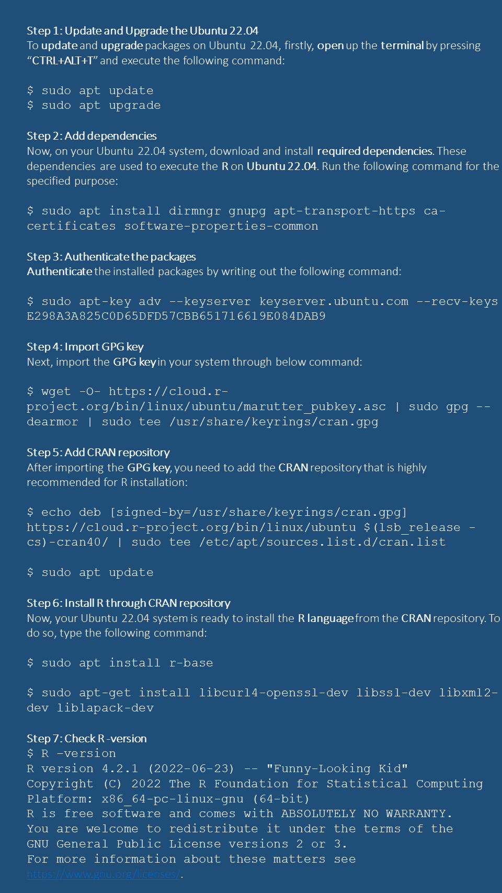

R is one of the most popular open-source statistical computing and visualization environments. It was developed in 1980 based on the S-language, and an open-source community regularly updates the software for a robust, programmable, portable, and open-source computing environment. We can use it to solve complex and sophisticated problems and “routine” analysis without restrictions on access or use.
The R can be downloaded from the R project of a repository CRAN or you can install Microsoft R Open, the enhanced distribution of R from Microsoft. It is a complete and free open source platform for statistical analysis and data science
Installation instruction of R in Windows and MAC could be found here. Detail Installation steps of Microsoft R Open in different operating systems can be found here.
Installing R on Mac OS is similar to Windows. The easiest way is to install it through CRAN by going to the CRAN downloads page and following description as as shown here
The installation of R in Ubuntu little tricky for those who are not familiar with command line. Details R installation on Ubuntu 19.04/18.04/16.04 could be found here.

After R installation in Windows, double click on the desktop icon or open the program from START to run R. R will be open as a Console window. You can work in the console and use R with the command line. However, the command line can be pretty daunting to a beginner. It is better to work in R Editor. First, you must create a New script from File menu. Any code you run in R-script output will be displayed in the console window. We can save all your R codes as an R script file and output them in the console as an R-Data file.
R can be run in the command line and graphical user interfaces in integrated development environment (IDE). Below are the best programming IDE for R:
RStudio is one of the best integrated development environment (IDE) for R that includes a console, a terminal syntax-highlighting editor that supports direct code execution, as well as tools for plotting, history, debugging and workspace management. RStudio Desktop and RStudio Server for Windows, Mac, and Linux are open sources.
First, you have to download the latest version of RStudio according to your operating system from here. For windows user, and just run the installation file and it normally detects your latest installed R version automatically. If you want to do some extra configuration, you need follow some steps which can be found here
For installation instruction of R and RStudio in Mac OS could be found here. Installing R Studio on Ubuntu could be found here
We may open RStudio just double click Rstudio icon on your Desktop or on the task bar. It has several components: console, terminal, editors, global environment etc.
Navigate to Tools → Global options → Appearance and switch the theme in the Editor Theme option. By default, you will have the Textmate theme activated. There is a wide in-built variety of themes to choose, from light to dark themes
R Packages are collections of R functions, data, and compiled code in a well-defined format. The directory where packages are stored is called the library. We can install any R ‘package’ or multiple package directly from the console, using r-script and GUI (Tools > Install Packages) through internet.
Use install.packages() function in your console or in a script:
# One package
# install.packages("raster", dependencies = TRUE)
# Multiple packages
# install.packages(c("raster","gstat"), dependencies = TRUE)To use any installed libraries, simply type the library() function with the name of the library in brackets. For example
library(spatial)If we want see content of any library, just use help() function
library(help=spatial)